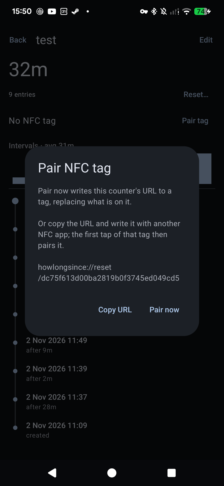

Funzionalità
Ogni cosa che tieni d'occhio è un contatore: un'etichetta, alcuni tag e il registro di ogni volta che è stato creato o azzerato. L'app mostra il tempo trascorso dall'ultimo azzeramento e può avvisarti quando un contatore è fermo da troppo.
Contatori e storico
- Contatori: ognuno ha un'etichetta e dei tag separati da virgole. Le schede mostrano il tempo trascorso con un numero grande e sotto la data dell'ultimo azzeramento.
- Registro degli azzeramenti: ogni creazione o azzeramento viene salvato, marcato
create,manualonfc. La pagina di dettaglio di un contatore mostra il registro come una timeline con l'intervallo tra un azzeramento e l'altro, e un piccolo grafico a barre degli intervalli recenti e della loro media. - Azzeramento nel passato: «Prima…» nella pagina di dettaglio, per quando ti sei dimenticato di registrarlo.
- Note: «Azzera…» nella pagina di dettaglio accetta una nota facoltativa (es. "nuova marca di filtro"), mostrata nella timeline.
- Annulla: dopo ogni azzeramento compare un messaggio con «Annulla», che rimuove quella voce dal registro.
- Archivio: nasconde un contatore senza perderne la storia; i contatori archiviati non hanno promemoria e si trovano sotto il chip «Archiviati».
- Ricerca, ordinamento e tag: cerca tra etichette e tag; ordina per più in ritardo, azzerati di recente o nome; filtra per tag, ognuno con un colore fisso.

Promemoria
- Imposta se vuoi «Avvisa dopo» in ore, giorni o settimane (o minuti in modalità Debug). «Usa la mia media» lo imposta sul tuo intervallo medio tra un azzeramento e l'altro.
- Un anello attorno al pulsante di azzeramento si riempie man mano che si avvicina il promemoria e diventa rosso quando è scaduto. I contatori in ritardo compaiono per primi.
- Toccando la notifica si apre la pagina del contatore. I suoi pulsanti azzerano il contatore o rimandano di un giorno.
Tag NFC
- Abbina un tag dalla pagina di dettaglio del contatore. L'app scrive
howlongsince://reset/<uuid>(l'id di sincronizzazione del contatore, così il tag funziona su ogni telefono del gruppo) sul tag e ne ricorda l'ID. - Toccare il tag azzera il contatore, anche ad app chiusa. I tag non abbinati vengono rifiutati, e «Disabbina» o «Riabbina» fanno smettere di funzionare un vecchio tag.
- Oppure scegli «Copia URL» e scrivi il tag con qualsiasi altra app NFC; il primo tocco di quel tag lo abbina.
- Funziona qualsiasi tag NDEF scrivibile, per esempio gli adesivi NTAG213/215/216.

Su Android
- Widget per la schermata Home: i contatori che più hanno bisogno di un azzeramento, ognuno con il suo pulsante. I tempi si aggiornano a ogni modifica e ogni 30 minuti.
- Scorciatoie del launcher: tieni premuta l'icona dell'app per azzerare i 4 contatori che ne hanno più bisogno.
- Aspetto: Material 3 con i colori del tuo sfondo (Android 12+) e una barra del titolo grande che si riduce scorrendo. Android 8.0 o successivo.
- Impostazioni (menu ☰): tema scuro (segue il sistema finché non lo cambi), modalità Debug (promemoria in minuti).
- Lingue: inglese e italiano, secondo la lingua del telefono. Da Android 13 la lingua dell'app si può anche impostare a parte (Impostazioni → App → How Long Since? → Lingua).
Gruppi e sincronizzazione
I contatori si possono mettere in gruppi e condividere con altri telefoni e browser, cifrati end-to-end. Vedi Gruppi e Privacy.
Esporta e importa
Un file JSON, verificato prima di toccare qualsiasi dato. «Sostituisci» rimpiazza i gruppi con lo stesso nome con quelli del file, «Tieni entrambi» li importa come nuovi gruppi. Lo stesso file funziona sul telefono e sul web.
Web app

Ogni gruppo sincronizzato si può aprire anche in un browser su howlongsince.etrunon.eu/app (o sul tuo server). La web app fa tutto quello che fa il telefono tranne l'abbinamento NFC, i promemoria e le notifiche, e il widget. I contatori possono anche vivere solo nel browser ("Senza gruppo", salvati nel suo local storage).
Si può installare come app, con finestra e icona proprie:
- Chrome / Chromium / Edge (qualsiasi OS): l'icona di installazione a destra della barra degli indirizzi.
- Firefox su Windows (143+): l'icona "aggiungi alla barra delle applicazioni" nella barra degli indirizzi. Se manca, imposta
browser.taskbarTabs.enabledatrueinabout:config. - Firefox su Android: menu → "Aggiungi a schermata Home".
- Firefox su Linux: nessuna opzione di installazione; usa una scheda fissata o Chromium.
La web app tiene chiavi e token nel localStorage del browser: cancellare i dati del sito li perde, insieme ai contatori Senza gruppo. "Copia link" salva un gruppo; Esporta salva i Senza gruppo.